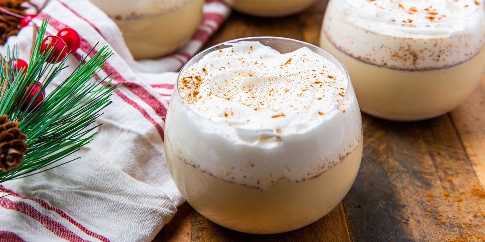

Homemade eggnog is the perfect way to ring in the holiday season.
This eggnog recipe is rich, creamy, and perfectly festive.
Eggnog is a thick, creamy, and dairy- and egg-based drink.
It's traditionally made in large batches and served at holiday gatherings.
It's often spiked with bourbon or rum, but it is also frequently served without alcohol.
What does eggnog taste like?
It's hard to explain the flavor of eggnog to someone who hasn't tasted it, but we'll try:
Eggnog is custardy, rich, creamy, and sweet.
It tastes a bit like melted ice cream that's been spiced with nutmeg.
Ingredients
- Milk and light cream: This traditional eggnog recipe contains milk and light cream
- Spices and seasoning You'll need cinnamon, cloves, vanilla extract, and nutmeg.
- egg yolks: Egg yolks thicken the mixture, creating a decadent texture.
- Sugar: Of course, you'll need white sugar for this dessert-like beverage.
- Rum: Spike your eggnog with light rum or leave it as-is for a non-alcoholic treat.
Steps:
- Heat the milk, cinnamon, cloves, and a dash of vanilla. Boil, then remove from heat.
- Whisk the egg yolks, then whisk in the sugar.
- Gradually whisk the hot milk mixture into the egg mixture.
- Cook the mixture over medium heat until thick, then strain to remove the cloves.
- Stir in the cream, rum, remaining vanilla, and nutmeg. Refrigerate overnight.